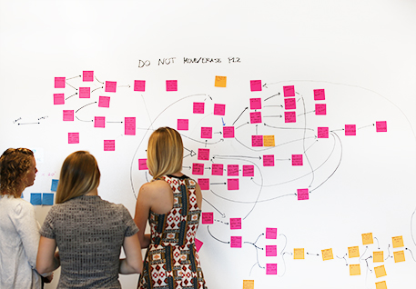
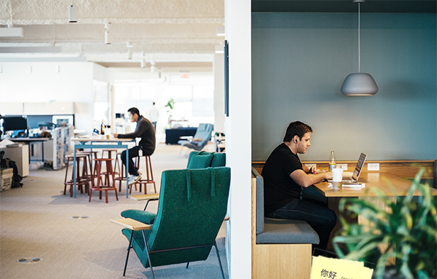
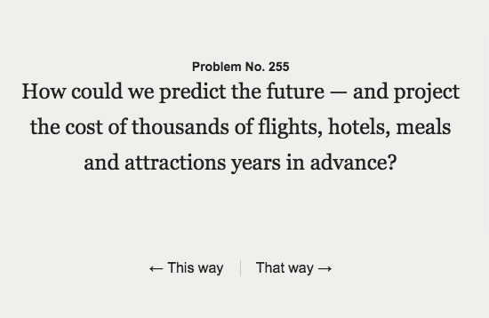

Technical Lead and Development
The Project
Education First is an education company, but we also want to be a frontrunner when it comes to the educational technology industry. This all starts with a strong tech recruitment process, so my team was asked to put together a microsite for us to use to funnel EF labs applicants the careers website. We needed to show off our process and our work culture, and do it all in the span of 3 weeks.
The tagline of the site was "small teams, big problems", and we created several adorable images to illustrate this theme.My Role
For this project I was the technical lead, so in addition to creating designs, I was in charge of representing our technological capabilities throughout the design process and creating prototypes. Then during implementation phase, I picked the optimal technology and translated all that creative thought into a tangible product.
Challenges
Representing EF’s culture. It is a really tough thing to boil down our departments culture into the space of a single web page. We ended up deciding that we wanted to capture two things about our process in the tech department - the first is that we work in small multidisciplinary teams, and the second that we are solving large complicated problems. We settled on the catchphrase “small teams, big problems”.
Finding the right technology. Because this microsite was going to be viewed by thousands of software engineers from around the world, we needed it to be built elegantly and with the right technology. Basically, we needed to show off our coding chops. I decided to build the site in React.js, and I built a plugin that I posted on Github afterword, so that any interested developers could follow a trail of breadcrumbs to understand my thought process in building the site.
Building for marketers. We needed to make the site content-editable so that designers, copywriters and marketers could change the content later. Myself and another developer built our own data storage system to allow the site to be editable in the future without any technical knowledge.
The Solution
The result of this project was a totally independent microsite, built with advanced technology and designed to showcase our creative thinking. The site linked back to the EF careers page at different points to drive interested techies towards our jobs, and showcased the perks and benefits of working at EF as well.
